# dbinom gibt uns die Wahrscheinlichkeits(masse) bei X = x
dbinom(x = 1, size = 2, prob = 1/6) [1] 0.2777778Es gehört zur Wahrscheinlichkeit, dass viele unwahrscheinliche Dinge geschehen werden.
— Aristoteles
Definiere eine Zufallsvariable als Beobachtungsmerkmal, dessen Ausprägung variiert und daher nicht exakt vorhergesagt werden kann.
Interpretiere die Wahrscheinlichkeitsverteilung einer Variable als Modell, das sich auf eine Grundpopulation bezieht.
Beachte, dass die Wahrscheinlichkeit \(P\) für ein Ereignis stets zwischen 0% und 100% liegt. \(P\) kann daher nur Werte zwischen 0 und 1 annehmen.
Interpretiere die Binomialverteilung als diskrete Verteilung und zwar als Wahrscheinlichkeitsverteilung für die Zufallsvariable “Anzahl Erfolge/Misserfolge” (Eintreten eines bestimmten Ereignisses) bei \(n\) unabhängigen Versuchen.
Interpretiere die Normalverteilung als eine kontinuierliche/stetige Verteilung.
In kontinuierlichen Verteilungen ist die Wahrscheinlichkeit für ein ganz bestimmtes Ereignis stets Null. Es ist aber möglich Wahrscheinlichkeiten für Wertebereiche (Intervalle) zu berechnen.
Die Normalverteilung ist symmetrisch um den Mittelwert und kann durch die Parameter Mittelwert \(\mu\) und Standardabweichung \(\sigma\) vollständig beschrieben werden. Mittelwert und Median sind in diesem Fall identisch.
Interpretiere die Standardnormalverteilung als eine Normalverteilung mit dem Mittelwert \(\mu = 0\) und der Standardabweichung \(\sigma = 1\).
Jede Normalverteilung kann durch \(z\)-Transformation in die Standardnormalverteilung umgewandelt werden.
Interpretiere den \(z\)-Wert als Abstand eines Wertes vom Mittelwert in Anzahl Standardabweichungen. Punkte mit negativen \(z\)-Werten liegen links vom Mittelwert und Punkte mit positiven \(z\)-Werten liegen rechts vom Mittelwert.
\[Z=\frac{X - \mu}{\sigma}\]
Verwende den \(z\)-Wert,
… um die Quantile für \(X=x\) zu bestimmen (z.B. bei der Berechnung von Konfidenzintervallen).
… um zu bestimmen, ob ein Wert als ungewöhnlich beurteilt werden muss (Faustregel: \(Z\) > |2| ist ungewöhnlich).
… um Wahrscheinlichkeiten zu berechnen: \(P(X \le x)\), \(P(X \ge x)\) und \(P(x \le X \le x)\).
Bei rechtsschiefen Verteilungen hat der Median einen negativen \(z\)-Wert.
Bei linksschiefen Verteilungen hat der Median einen postiven \(z\)-Wert.
Die 68-95-99.7%-Regel ist eine Faustregel die besagt, dass unter der Normalverteilungskurve 68% der Fläche innerhalb von \(\mu \pm \sigma\), 95% der Fläche innerhalb von \(\mu \pm 2 \sigma\) und 99.7% der Fläche innerhalb von \(\mu \pm 3 \sigma\) liegen.
Beurteile anhand eines Histogramms, eines Boxplots oder eines QQ-Plots, ob die beobachteten Daten aus einer normalverteilten Population stammen oder nicht.
Interpretiere die \(t\)-Verteilung als Anpassung der Normalverteilung, wenn die Standardabweichung \(\sigma\) einer Population unbekannt ist (was fast immer der Fall ist).
Die Form der \(t\)-Verteilung ist nur abhängig vom Stichprobenumfang. Dieser wird in Freiheitsgraden \(df\) angegeben, wobei \(df = n-1\).
Ist der Stichprobenumfang \(n\) > 30, nähert sich die Form der \(t\)-Verteilung der Normalverteilung an.
Die \(t\)-Verteilung wird mit dem Parameter \(df\) vollständig beschrieben.
Interpretiere \(t\)-Werte, die von Statistikprogrammen angegeben werden, gleich wie \(z\)-Werte.
Erstelle QQ-Plots in R, um zu prüfen, ob eine Variable von einer Normalverteilung abwicht.
Eine Zufallsvariable ist eine numerische Grösse, deren Wert vom Ausgang eines Zufallsexperiments abhängt. Sie erlaubt es, zufällige Phänomene mathematisch zu beschreiben und statistisch zu analysieren.
Die Verteilung einer Zufallsvariable beschreibt, mit welcher Wahrscheinlichkeit sie bestimmte Werte annimmt. Sie ist ein zentrales Konzept, um die Eigenschaften und das Verhalten der Zufallsvariable zu verstehen – etwa ob sie eher kleine oder grosse Werte liefert, ob sie symmetrisch verteilt ist, usw.
Eine Wahrscheinlichkeitsverteilung ist eine mathematische Funktion (ein Modell), welche die Wahrscheinlichkeiten für alle möglichen Werte einer Zufallsvariablen beschreibt.
Das tönt recht technisch, ist aber anhand von einem Beispiel leicht zu verstehen: Stellen Sie sich vor, Sie möchten wissen, wie gross Ihre Kolleginnen in der Klasse sind. Dazu messen Sie von jeder Person die Körpergrösse und stellen fest, dass gewisse Körpergrössen häufig und andere eher selten sind. Wahrscheinlichkeitsverteilungen helfen, wenn es darum geht zu verstehen, welche Merkmalsausprägungen eher häufig und welche eher selten zu erwarten sind. Sie erlauben auch die Beantwortung von Fragen wie: “Wie gross ist die Wahrscheinlichkeit, dass die nächste Person, die ich messe, grösser als zwei Meter ist?”.
In der deskriptiven Statistik haben wir bereits Verteilungen von Zufallsvariablen kennen gelernt: Sie lassen sich durch Form (symmetrisch, links- oder rechtsschief, irregulär), Kennzahlen der zentralen Tendenz und Kennzahlen der Streuung beschreiben.
Beachte, dass Histogramme, Boxplots und Streudiagramme die Verteilung von Stichprobendaten beschreiben (empirische Verteilung), während Wahrscheinlichkeitsverteilungen Modelle für die theoretische Verteilung von Daten sind.
In der mathematischen Schreibweise wird die Wahrscheinlichkeit, dass \(X\) einen Wert \(x\) annimmt, geschrieben als
\[P(X = x) = [0, 1] = Zahl~zwischen~0~und~1.\]
Die Summe der Wahrscheinlichkeiten für alle möglichen Werte von \(X\) ist stets 1. Ausserdem ist die Wahrscheinlichkeit für einen bestimmten Wert zwischen 0 (0%) und 1 (100%). Wenn wir also eine Münze werfen, dann ist die Wahrscheinlichkeit
\[P(X = Kopf) = 0.5,\]
\[P(X = Zahl) = 0.5.\]
Wobei 0.5 die Wahrscheinlichkeit für den Wert {\(Kopf, Zahl\)} ist. Eine andere Möglichkeit für \(X\) existiert nicht. Die Summe aller möglichen Werte für \(X\) bei einem Münzwurf ist daher
\[P(X = Kopf \cup X = Zahl) = P(Kopf) + P(Zahl) = 1.\]
Hinweis: \(\cup\) steht für ein mathematisches oder, \(\cap\) für ein mathematisches und. Weil in diesem Fall Kopf und Zahl disjunkt sind, das heisst nicht zusammen eintreffen können, ist \(P(X = Kopf \cap X = Zahl) = 0\).
Wahrscheinlichkeitsverteilungen beschreiben also die theoretische Verteilung der Werte (Merkmalsausprägungen) einer bestimmten Zufallsvariable (Beobachtungsmerkmal). Daher ist es naheliegend, dass die Art der Variable einen Einfluss auf den Verteilungstyp hat. In der Statistik unterscheidet man zwischen
Sie werden in diesem Kurs einigen Verteilungen begegnen. Für die reine Anwendung ist es jedoch nicht nötig, alle diese Verteilungen im Detail zu kennen. Wir beschränken uns darum im Folgenden auf die Binomialverteilung (eine Wahrscheinlichkeitsverteilung für diskrete Variablen) und die Normalverteilung (eine Wahrscheinlichkeitsverteilung für stetige Variablen). Wenn Sie das Konzept dieser beiden Wahrscheinlichkeitsverteilungen verstanden haben und damit rechnen können, dann sind diese Kenntnisse einfach auf weitere Verteilungen (wie z.B. die \(t\)-Verteilung oder die Poissonverteilung) übertragbar.
Wie wahrscheinlich ist es, in zwei Würfen von Würfeln genau eine 6 zu würfeln? Diese vermeintlich einfache Frage kann mit Hilfe der Binomialverteilung beantwortet werden (wenn Sie meinen, die Antwort ist \(\frac{2}{6} = \frac{1}{3}\), dann liegen Sie falsch). Die Binomialverteilung gibt die Wahrscheinlichkeit für \(x\) Erfolge bei \(n\) unabhängigen Versuchen und einer Erfolgswahrscheinlichkeit \(\pi\) an. Im genannten Beispiel ist unsere Zufallsvariable \(X\) Binomialverteilt mit \(n = 2\) (zwei Würfe) und \(\pi = \frac{1}{6}\) (wir gehen von einem fairen Würfel aus).
Etwas formaler: \[X \sim Binomial(n, \pi).\]
Aus Zeitgründen (und nicht weil es zu schwierig wäre), verzichten wir auf die Formel und die manuelle Berechnung. Unsere Frage \(P(X = 1)\), also genau einen 6er in zwei Würfen, können wir mit R einfach beantworten:
# dbinom gibt uns die Wahrscheinlichkeits(masse) bei X = x
dbinom(x = 1, size = 2, prob = 1/6) [1] 0.2777778In Abbildung 2.1 sehen Sie die Wahrscheinlichkeitsverteilung für \(X \sim Binomial(2, \frac{1}{6}).\)
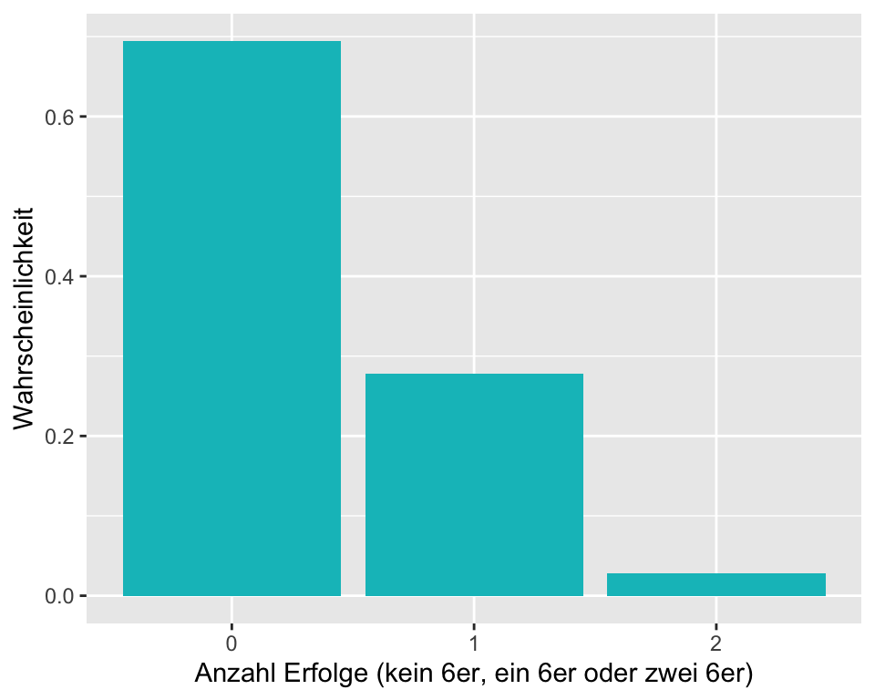
Das Experiment kann also drei mögliche Ausgänge haben, wobei \(P(X = 1) = 0.278 = 27.8\%.\)
Gerade wenn \(n\) grösser wird, ist man froh, dank R auf eine manuelle Berechnung verzichten zu können. Wie wahrscheinlich ist es, bei \(30\) Würfelwürfen genau eine \(6\) zu würfeln?
dbinom(x = 1, size = 30, prob = 1/6)[1] 0.02527632Es ist natürlich sehr unwahrscheinlich, bei 30 Würfen genau einen 6er zu würfeln. Wir sehen in Abbildung 2.2, dass es am wahrscheinlichsten ist, bei \(30\) Würfen 5-Mal eine \(6\) zu würfeln. Das macht ja auch Sinn, da wir in einem Sechstel der Fälle eine \(6\) erwarten, also \(30/6 = 5.\)
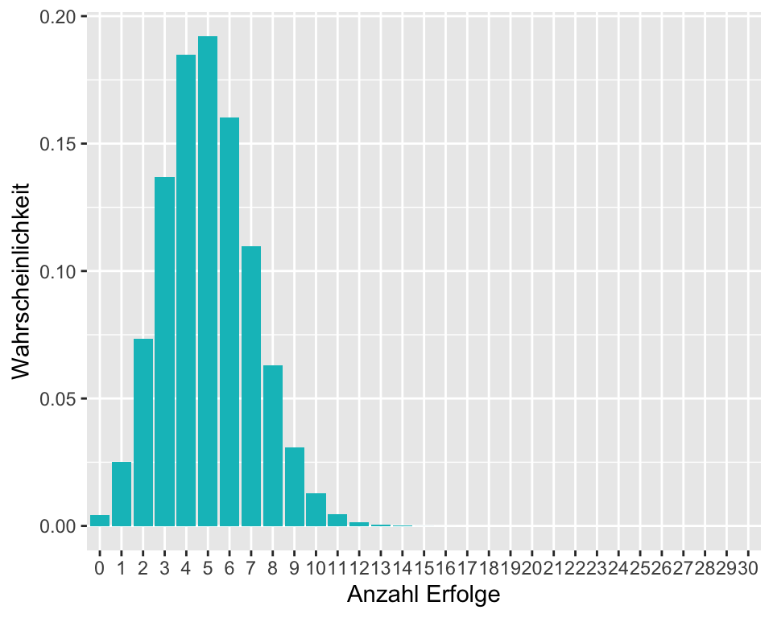
Wir können mit der Binomialverteilung nicht nur \(P(X = x)\) berechnen, sondern auch \(P(X \le x)\) oder \(P(X > x)\). Dafür muss man einfach die entsprechenden Wahrscheinlichkeiten zusammenrechnen. Mit \(n = 30\) und \(\pi = \frac{1}{6}\) ist \(P(X \le 3) = P(X = 0) + P(X = 1) + P(X = 2) + P(X = 3)\):
# Aufsummieren der einzelnen Wahrscheinlichkeiten für x von 0 bis 3.
sum(dbinom(x = c(0:3), size = 30, prob = 1/6))[1] 0.2396195Weil das Aufsummieren der einzelnen Wahrscheinlichkeiten mühsam ist, gibt es eine R-Funktion, welche das für uns erledigt.
# pbinom gibt uns die Wahrscheinlichkeit für X <= x
pbinom(3, 30, 1/6)[1] 0.2396195Man nennt die Funktion für \(P(X \le x)\) auch kumulative Verteilungsfunktion. Beachten Sie, dass bei solchen Berechnungen immer von links (also vom tiesten Wert her) aufsummiert wird. \(P(X > 3)\) lässt sich dann einfach als Gegenwahrscheinlichkeit berechnen:
# Die Gegenwahrscheinlichkeit für X <= x ist X > x
1-pbinom(3, 30, 1/6)[1] 0.7603805Beispiel 1: Nächste Woche findet die Versammlung eines Berufsverbandes statt. Das Komitee besteht aus 18 Personen. Die Wahrscheinlichkeit, dass ein Mitglied des Komitees zur Versammlung kommt, beträgt 70%.
Wie gross ist die Wahrscheinlichkeit, dass alle Mitglieder anwesend sind? Die Anzahl anwesender Personen ist binomialverteilt mit \(n = 18\) und \(\pi = 0.7\), also \(X\sim Bin(18, 0.7)\). Gefragt ist \(P(X = 18).\) Dies lässt sich wie folgt berechnen:
dbinom(18,18,0.7)[1] 0.001628414Wie gross ist die Wahrscheinlichkeit, dass eine Zweidrittelmehrheit anwesend ist?
Die Anzahl anwesender Personen ist Binomialverteilt mit \(n = 18\) und \(\pi = 0.7\), also \(X\sim Bin(18, 0.7)\). Gefragt ist \(P(X > 11)\), also die Gegenwahrscheinlichkeit von \(P(X\leq11)\).
1-pbinom(11, 18, 0.7)[1] 0.7216964Die ganze Wahrscheinlichkeitsverteilung zu dieser Frage ist in Abbildung 2.3 ersichtlich. Wie bereits erwähnt, führt das Aufsummieren der Wahrscheinlichkeiten \(P(X = 12) + P(X = 13) + …. + P(X = 18)\) zum gleichen Resultat von 72.17%.
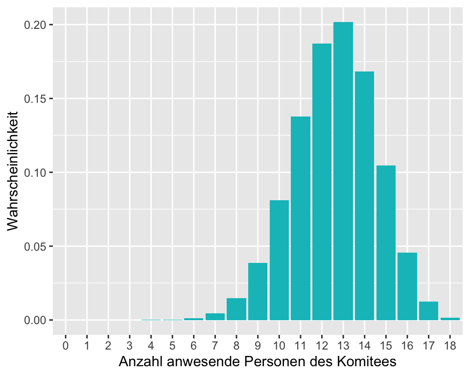
Beispiel 2: Eine Labormitarbeiterin hat neue Reagenzgläser bestellt. Laut Hersteller beläuft sich der Anteil defekter Gläser auf 3%. Zur Sicherheit nimmt die Labormitarbeiterin eine Stichprobe: Sie wählt einen zufälligen Karton mit 50 Gläsern aus, darin sind 7 Gläser defekt. Wie wahrscheinlich sind 7 oder sogar noch mehr defekte Gläser, wenn die Angabe des Herstellers stimmt?
Die Anzahl defekter Gläser ist Binomialverteilt mit \(n = 50\) und \(\pi = 0.03\), also \(X\sim Bin(50, 0.03)\). Gefragt ist \(P(X > 6)\), also die Gegenwahrscheinlichkeit von \(P(X\leq6)\).
[1] 0.0007037346Die Berechnung mit der Binomialverteilung legt nahe, dass die Angabe des Herstellers nicht korrekt ist. Es ist sehr unwahrscheinlich, 7 oder mehr defekte Gläser zu finden, wenn der wahre Anteil defekter Gläser wirklich 3% sein sollte. Um die Fragestellung der Labormitarbeiterin abschliessend zu klären, ist ein statistischer Test nötig (siehe nächstes Kapitel).
Wenn eine Variable innerhalb eines Bereichs unendlich viele Werte annehmen kann, wird diese mittels einer kontinuierlichen Verteilung modelliert.
Mathematisch ausgedrückt ist die Wahrscheinlichkeit, dass eine kontinuierliche Variable einen ganz bestimmten Wert annimmt gleich null:
\[P(X = x) = 0\]
Z.B. die Wahrscheinlichkeit, dass eine Temperaturmessung exakt 37° C ergibt ist gleich null. Warum? In einem unendlichen Wertespektrum kann die aktuelle Temperatur unendlich viele kleinere oder grössere Werte annehmen, z.B. 36.99999999 oder 36.999999998 oder 37.000000001 etc. (es sind unendlich viele Nachkommastellen möglich).
Da es unmöglich ist, die Wahrscheinlichkeit für einen bestimmten Wert in einem kontinuierlichen Datenspektrum anzugeben, werden Wahrscheinlichkeiten für kontinuierliche Daten für Wertebereiche (Werteintervalle) berechnet und nicht für einzelne Werte. Was berechnet werden kann, ist die Wahrscheinlichkeit, dass ein gesuchter Wert in einem bestimmten Intervall liegt, z.B. \(P(X\le x)\) oder \(P(a \le X \le b)\).
In einem Wahrscheinlichkeitsdiagramm ist die Fläche unter der Kurve gleich 1 (Abbildung 2.4 ). Dies entspricht der Summe der Wahrscheinlichkeiten für alle möglichen Ausprägungen einer kontinuierlichen Variablen \(X\).
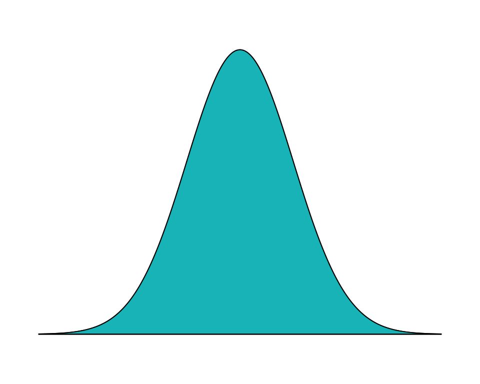
In der Statistik nimmt die Normalverteilung (auch Gauss-Verteilung, Glockenkurve) eine zentrale Stellung ein. Diese symmetrische Wahrscheinlichkeitsverteilung erlaubt es, eine Vielzahl von kontinuierlichen Variablen wie z.B. Körpergrösse oder Ergebnisse von Intelligenztests (IQ-Scores) zu modellieren.
Eine Normalverteilung wird durch die Parameter Mittelwert \(\mu\) und die Varianz \(\sigma^2\) (bzw. dien Standardabweichung \(\sigma\)) vollständig beschrieben. Folgt eine Variable \(X\) einer Normalverteilung, wird das wie folgt notiert:
\[ X \sim N(\mu, \sigma^2). \]
Für Berechnungen mit der Normalverteilung braucht man oft die Standardabeichung \(\sigma\) statt die Varianz \(\sigma^2\). Es spielt in der Praxis aber keine Rolle, ob die Varianz oder die Standardabweichung vorliegt weil \(\sigma = \sqrt{\sigma^2}\). Während eine Änderung des Mittelwerts die Glockenkurve nach links oder nach rechts verschiebt, führt eine Änderung der Standardabweichung dazu, dass die Kurve breiter oder schmaler wird.
Die Normalverteilung von Daten ist eine wichtige Voraussetzung für zahlreiche statistische Verfahren. Üblicherweise kennt man die wahre Verteilung einer Variablen in einer Population jedoch nicht und man muss aus den Stichprobendaten ermitteln, ob Evidenz dafür vorliegt, dass die Daten aus einer normalverteilten Population stammen. Wie man dabei vorgeht, wird weiter unten beschrieben.
Wie Sie bei der Binomialverteilung gelernt haben, kann man bei diskreten Variablen die Wahrscheinlichkeit für alle \(x\) im Wertebereich von \(X\) angeben. Diese Verteilung von Wahrscheinlichkeiten nennt man Wahrscheinlichkeitsverteilung. Die Wahrscheinlichkeit \(P(X = x)\) ist gegeben durch die Wahrscheinlichkeitsfunktion \(f(x)\). Man nennt \(f(x)\) bei diskreten Variablen auch Wahrscheinlichkeitsmasse oder Gewichtsfunktion. Wir gehen in diesem Kurs nicht auf weitere Details dieser Wahrscheinlichkeitsfunktionen ein. In R kann man die Wahrscheinlichkeitsfunktion der Binomialverteilung durch dbinom(x, n, p) abrufen (siehe Kapitel zur Binomialverteilung). Nebst der Wahrscheinlichkeitsfunktion ist häufig die kumulative Wahrscheinlichkeitsfunktion \(F(x) = P(X \le x)\) von Interesse. Diese erhält man, wie bei der Binomialvertelung beschrieben, durch das Aufsummieren der einzelnen Wahrscheinlichkeiten. In R erhalten wir die kumulative Wahrscheinlichkeitsverteilung für \(P(X \le x)\) durch pbinom(x, n, p).
In Abbildung 2.5 sehen Sie links die Wahrscheinlichkeitsverteilung und rechts die kummulaitve Wahrscheinlichkeitsverteilung für \(X \sim Binomial(20, 0.2)\). Erkennen Sie, dass man jeweils von der einen Verteilung auf die andere schliessen kann?
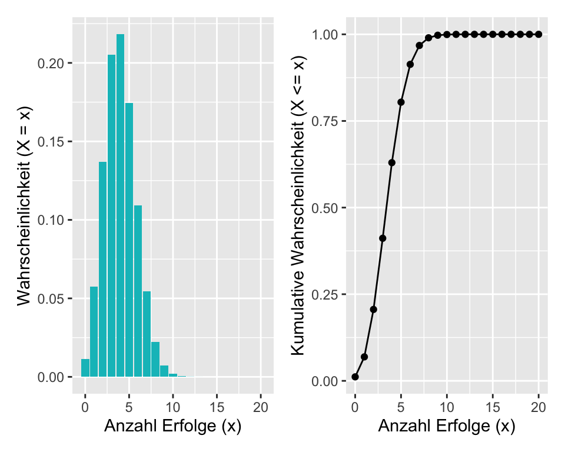
Für eine kontinuierliche Zufallsvariable \(X\) gilt jedoch \(P(X = x) = 0\) für alle \(x\). Anders als bei diskreten Variablen können wir also die Wahrscheinlichkeitsverteilung von \(X\) nicht mittels der Angaben von “Punkt”-Wahrscheinlichkeiten beschreiben. Die Wahrscheinlichkeitsverteilung einer kontinuierlichen Variablen \(X\) kann jedoch beschrieben werden, indem man die Wahrscheinlichkeiten für Intervalle angibt:
\[ P(X \in [a, b]) = P(a < X \le b) \]
Anmerkung: Bei kontinuierlichen Variablen ist \(<\) und \(\le\) dasselbe, weil \(P(X = x) = 0\).
Um \(P(a < X \le b)\) zu berechnen, reicht es, die kumulative Verteilungsfunktion \(F(x) = P(X \le x)\) zu kennen, weil \(P(a<X ≤b)=F(b)−F(a)\). Zusammenfassend heisst dies, dass die Wahrscheinlichkeitsverteilung einer kontinuierlichen Variablen \(X\) durch die kumulative Verteilungsfunktion \(F(\cdot)\) beschrieben werden kann. Analog zur Wahrscheinlichkeitsfunktion bei diskreten Variablen gibt es für kontinuierliche Variablen die Dichtefunktion \(f(x)\). Diese erhält man durch Ableiten der kumulativen Wahrscheinlichkeitsfunktion: \[f(x) = F'(x).\]
Umgekehrt kann man aus der Dichte die kumulative Wahrscheinlichkeitsfunktion durch Integrieren zurückgewinnen:
\[ F(x) = \int_{-\infty}^x f(t)dt \]
In R erhalten wir die Dichte der Normalverteilung mit dnorm(x, mu, sigma) (darum dieses d (wie oben gesehen, steht im diskreten Fall das d für die Wahrscheinlichkeitsmasse statt für die Wahrscheinlichkeitsdichte)) und die kumulative Wahrscheinlichkeitsfunktion mit pnorm(x, mu, sigma). In Abbildung 2.6 sehen Sie links die Dichtefunktion und rechts die kumulaitve Wahrscheinlichkeitsverteilung für \(X \sim N(0, 1)\). Erkennen Sie, dass man jeweils von der einen Verteilung auf die andere schliessen kann?
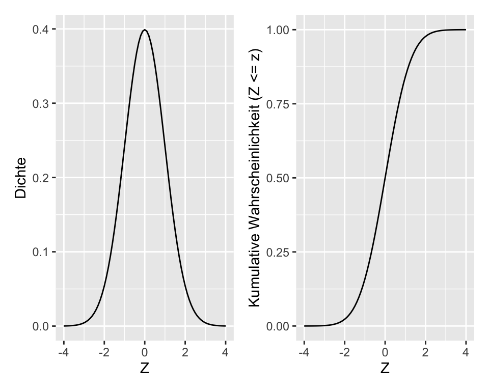
Beispiel: Der Intelligenzquotient (IQ-Score) ist normalverteilt. Er hat einen Mittelwert \(\mu\) = 100 und eine Standardabweichung \(\sigma\) = 15. Die Abbildung 2.7 zeigt die Wahrscheinlichkeitsverteilung für den IQ-Score. Uns interessiert z.B. die Frage, wie gross ist die Wahrscheinlichkeit, dass bei einem Test der IQ-Score zwischen 120 und 140 (also in ein bestimmtes Werteintervall) fällt, also \(P(120 \le X \le 140)\).
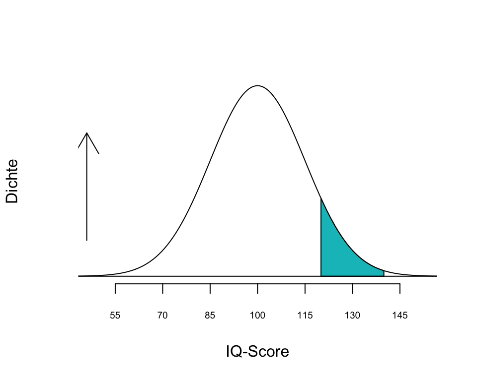
Die Abbildung 2.7 zeigt, dass die Verteilung des IQ-Score symmetrisch ist. Die Höhe der Kurve ist die Dichte und gibt in einem bestimmten Abschnitt die “Wahrscheinlichkeit” für einen bestimmten Wertebereich an. Beachte, dass die Wahrscheinlichkeit für einen bestimmten Wert aber immer 0 ist (siehe Section 2.5.1.1). Die Kurve hat ihr Maximum im Wertebereich um 100, also beim Mittelwert. Je weiter wir uns nach links oder rechts vom Mittelwert entfernen, desto geringer wird die Wahrscheinlichkeit für einen bestimmten IQ-Score. Die blaue Fläche zwischen den IQ-Scores 120 und 140 macht 8.7% der Gesamtfläche unter der Kurve aus (wie man diese Fläche berechnet, folgt später). Damit ist die Wahrscheinlichkeit, dass der IQ-Score zwischen 120 und 140 fällt \(p\) = 0.087 bzw. 8.7%. Wir sehen also, dass ein IQ-Score zwischen 120 und 140 ein nicht sehr häufiges Ereignis ist.
Wie bereits erwähnt ist die Normalverteilung eine wichtige Wahrscheinlichkeitsverteilung in der Statistik, weil sie die Modellierung zahlreicher natürlicher Phänomene erlaubt. So sind z.B. Körpergrösse, Blutdruck, Messfehler von Instrumenten und Hämoglobin-Gehalt im Blut annähernd normal verteilt. Als Dichtefunktion beschreibt sie, wie die Werte (Merkmalsausprägungen) einer Variablen (Beobachtungsmerkmal) verteilt sind. Die Kurve hat die Form einer Glocke (Gauss’sche Glockenkurve) und ist symmetrisch bezüglich des Mittelwerts, d.h. die häufigsten Merkmalsausprägungen liegen in der Nähe des Mittelwerts. Mit zunehmendem Abstand vom Mittelwert nach links oder rechts nimmt die Wahrscheinlichkeit für Werte ab und die Verteilungskurve nähert sich dem Wert 0, den sie aber nie erreicht! Das heisst die untere und obere Grenze einer Normalverteilung sind \((-\infty ; \infty)\).
Beispiel: Körpergrösse ist eine normalverteilte Variable. Die Abbildung 2.8 zeigt die Verteilung der Körpergrösse von 14-jährigen Frauen aus einer Stichprobe von \(n\) = 800.
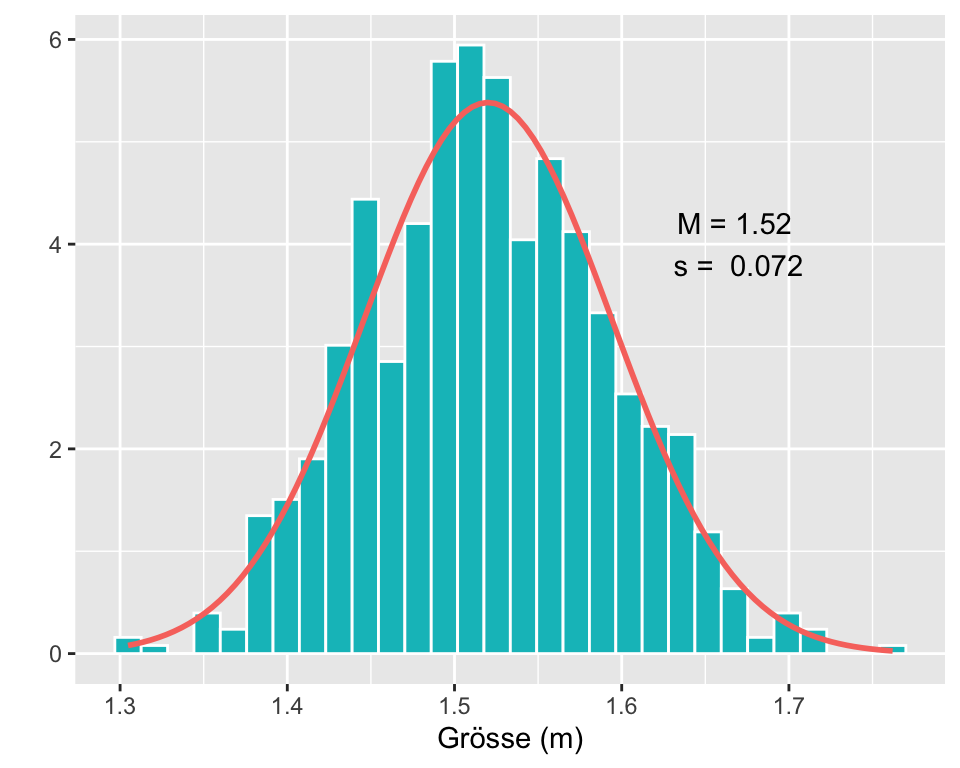
Das Histogramm in Abbildung 2.8 zeigt die Verteilung der Daten in der Stichprobe und wir erkennen, dass die meisten Werte um den Mittelwert \(\bar{x}\) = 1.52 m liegen. Werte über 1.65 m oder unter 1.4 m sind vergleichsweise selten anzutreffen. Die rote Kurve ist die theoretische Normalverteilungskurve mit dem Mittelwert \(\mu\) = 1.52 m und der Standardabweichung \(\sigma\) = 0.07 m. Obwohl die Kurve das Histogramm nicht exakt abbildet, scheint sie ein akzeptables Modell für die emprirische Häufigkeitsverteilung zu liefern und wir dürfen annehmen, dass unsere Stichprobe aus einer annähernd normalverteilten Population stammt.
Eine Normalverteilung wird mit den Parametern Mittelwert \(\mu\) und Varianz \(\sigma^2\) vollständig beschrieben. Die Form einer Normalverteilung variiert jedoch in Abhängigkeit von diesen Parametern.
Für die mathematisch Interessierten: Eine normalverteilte Variable \(X\) mit Parametern \(\mu\) und \(\sigma^2\) hat die Dichte \[\begin{equation} f(x)=\frac{1}{\sqrt{2\pi\sigma^2}} \exp\left(-\frac{(x-\mu)^2}{2\sigma^2}\right), \quad x\in \mathbb{R}. \end{equation}\]
Der Mittelwert ist die Kennzahl der zentralen Lage. Er gibt den Wert an, an dem die Glockenkurve ihr Maximum hat. Die meisten Werte gruppieren sich um den Mittelwert herum. Eine Veränderung des Mittelwerts verschiebt die Kurve nach links oder nach rechts auf der x-Achse einer Grafik.
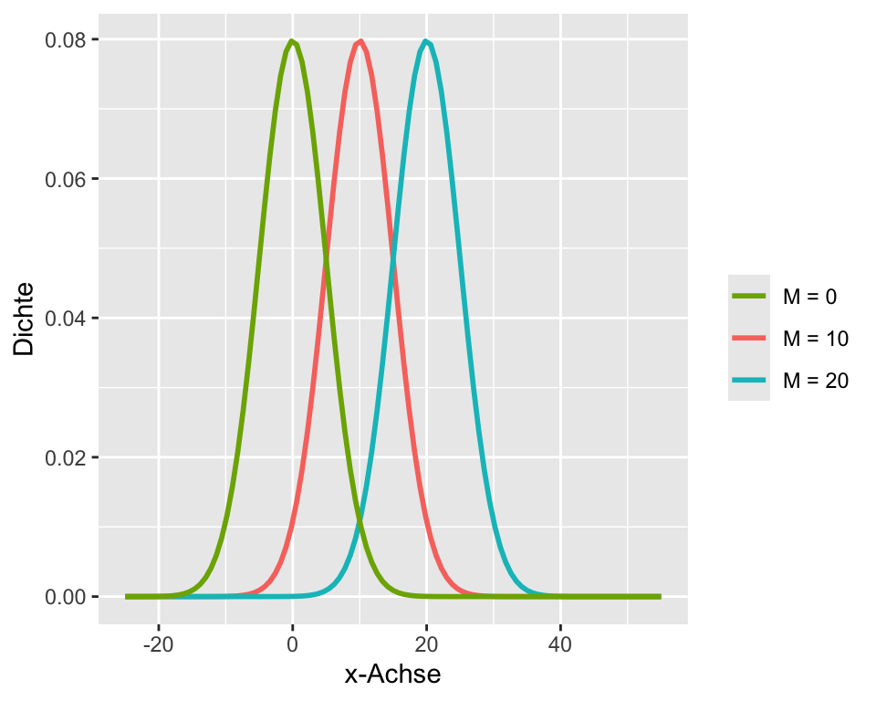
Die Standardabweichung ist eine Kennzahl der Streuung. Unterschiedliche Standardabweichungen beeinflussen die Breite der Glockenkurve.
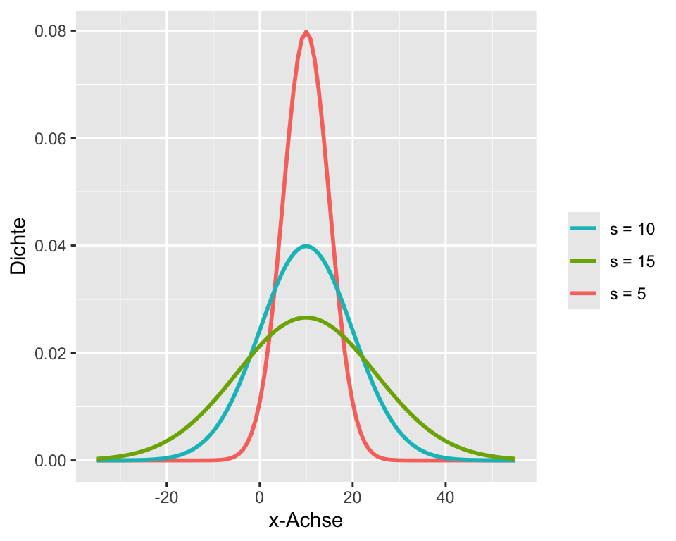
Wie oben ausgeführt, beschreibt das Normalverteilungsmodell die Verteilung der Daten in der Population. Um Stichprobenkennzahlen und Populationparameter leicht zu unterschieden, ist es gebräuchlich, Populationskennzahlen mit griechischen Buchstaben und Stichprobenkennzahlen mit römischen Buchstaben anzugeben. Daher wird ein Populationsmittelwert mit dem griechischen Symbol \(\mu\) und eine Populationsstandardabweichung stets mit dem griechischen Symbol \(\sigma\) angegeben.
Üblicherweise sind \(\mu\) und \(\sigma\) einer Population jedoch unbekannt, da es in der Regel unmöglich ist, eine gesamte Population zu messen. Wir können jedoch Zufallsstichproben ziehen um diese Parameter zu schätzen. Die Stichprobenkennzahlen, die als Punktschätzer (engl. point estimate) für die Populationsparameter dienen, werden mit den Symbolen \(\bar{x}\) für den Stichprobenmittelwert und \(s\) für die Stichprobenstandardabweichung angegeben. Es kann sein, dass sie manchmal den Symbolen \(\hat{\mu}\) und \(\hat{\sigma}\) begegnen. Der Hut bedeutet, dass \(\mu\) und \(\sigma\) geschätzt wurden. Es gilt also \(\hat{\mu} = \bar{x}\) und \(\hat{\sigma} =s\). Aus technischen Gründen muss in Grafiken gelegentlich auf griechische Buchstaben verzichtet werden.
Trotz ihrer unterschiedlichen Formen haben alle Normalverteilungen folgende gemeinsamen Eigenschaften:
Alle Normalverteilungen sind symmetrisch.
Median und Mittelwert sind identisch.
Eine Hälfte der Werte liegt unter und eine Hälfte über dem Mittelwert.
Die 68-95-99.7 Regel erlaubt es, den Anteil der Werte innerhalb einer bestimmten Distanz vom Mittelwert zu bestimmen.
Die 68-95-99.7 Regel ist eine empirische Regel der angewandten Statistik, die einen anschaulichen Zusammenhang zwischen Mittelwert und Standardabweichung eines normalverteilten Zufallsereignisses ermöglicht. Sie gibt an, wie viel Prozent der Daten innerhalb einer, zwei bzw. drei Standardabweichungen \(\sigma\) vom Mittelwert \(\mu\) entfernt sind.
Als Faustregel gilt:
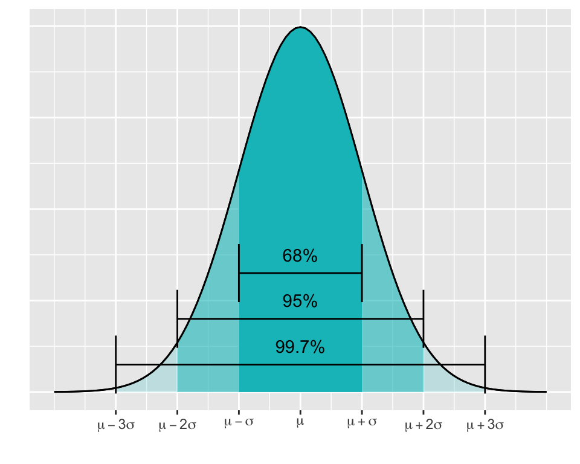
Beispiel: Ihr Lieblingspizzakurier wirbt damit, dass er innerhalb von durchschnittlich \(\bar{x}\) = 30 Minuten, mit einer Standardabweichung von \(s\) = 5 Minuten die bestellte Pizza liefern kann. Unter Anwendung der 68-95-99.7-Regel bedeutet dies, dass die Auslieferung
Wenn wir beliebige, normalverteilte Merkmale messen, werden wir immer wieder neue Normalverteilungen mit jeweils ihrem eigenen Mittelwert und ihrer eigenen Standardabweichung erhalten. D.h. die Normalverteilungskurve wird manchmal breiter, manchmal schmaler, manchmal höher, manchmal tiefer sein. Jedes Merkmal weist seine charakteristische Verteilung auf. In der Statistik interessieren wir uns oft für die Wahrscheinlichkeit, dass ein bestimmtes Ereignis eintritt z.B. das Ereignis, dass eine Studentin mindestens 168 cm gross ist: \(P(X > 168)\). Bei Daten aus normalverteilten Populationen erfolgt die Berechnung von Wahrscheinlichkeiten über die Berechnung von Flächeninhalten unter der Normalverteilungskurve. Allerdings ist diese Berechnung von Flächen unter Kurven eine nicht ganz triviale Angelegenheit. Das Integral der Dichtefunktion der Normalverteilung ist nicht explizit darstellbar mit Standardfunktionen wie \(exp(x)\), \(log(x)\) etc. Um diese Berechnungen zu erleichtern, wurde die Standardnormalverteilung “erfunden”. Diese ist eine Normalverteilung mit dem Mittelwert \(\mu\) = 0 und der Standardabweichung \(\sigma\) = 1.
Man notiert die Standardnormalverteilung mit \(\phi(x)\) für die Dichte \(f(x)\) und \(\Phi(x)\) für die kumulierte Verteilung \(F(x)\): Die Standardnormalverteilung hat die Dichte \[\begin{equation} \phi(x)=\frac{1}{\sqrt{2\pi}}\exp{\left(-\frac{1}{2}x^2\right)} \end{equation}\] und die kumulative Verteilungsfunktion der Standardnormalverteilung ist demnach \[\begin{align} \Phi(x)=\Pr(X<x)=\int_{-\infty}^x\phi(t)dt. \end{align}\]
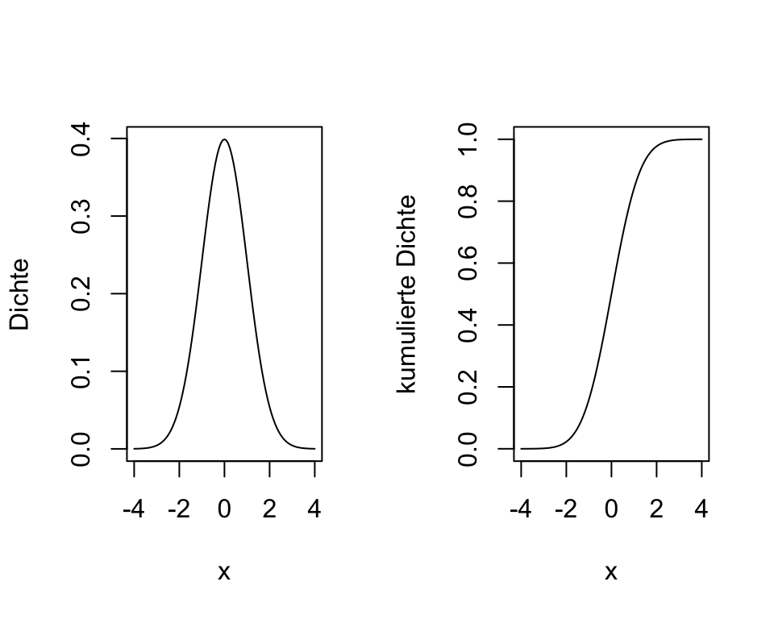
Jede beliebige Normalverteilung kann durch die Transformation
\[Z = \frac{X-\mu}{\sigma}\]
in eine Standardnormalverteilung umgewandelt werden, was Flächenberechnungen erheblich erleichtert, da die Werte der dazugehörigen kumulativen Verteilungsfunktion tabelliert vorliegen. Mann muss diese also nicht jedes mal neu ausrechnen, sondern es reicht, wenn man eine Transformation in eine Standardnormalverteilung vornimmt.
Umgekehrt kann man mit der Umkehrfunktion
\[X=Z\sigma+\mu\]
eine normalverteilte Variable mit willkürlichem \(\mu\) und \(\sigma\) generieren, also beliebig zentrieren und skalieren, wie das verschiedene Messinstrumente machen, die z.B. ein \(X\) mit einen Mittelwert von 100 und eine Standardabweichung von 15 wollen.
Ein bestimmter Wert von \(Z\) in der Standardnormalverteilung wird als \(z\)-Wert bezeichnet. Der \(z\)-Wert gibt an, um wie viele Standardabweichungen dieser Wert vom Mittelwert entfernt ist. Ist der \(z\)-Wert negativ, liegt der Wert links vom Mittelwert, d.h. er ist kleiner als der Mittelwert. Ist der \(z\)-Wert positiv, liegt der Wert rechts vom Mittelwert und ist somit grösser. Der Mittelwert selber hat stets den \(z\)-Wert 0. Es gilt also \(Z \sim N(0,1)\).
Um Stichprobendaten zu standardisieren, müssen die Rohdaten in \(z\)-Werte umgerechnet werden. Die Umwandlung einer beliebigen Normalverteilung in die Standardnormalverteilung erfolgt nach der Formel:
\[z_i=\frac{x_i - \bar{x}}{s}\]
Beispiel: Du hast zwei Äpfel, der eine wiegt 85g, der andere wiegt 110 g. Das durchschnittliche Gewicht von Äpfeln beträgt \(\bar{x}\) = 100g mit einer Standardabweichung \(s\) = 10 g.
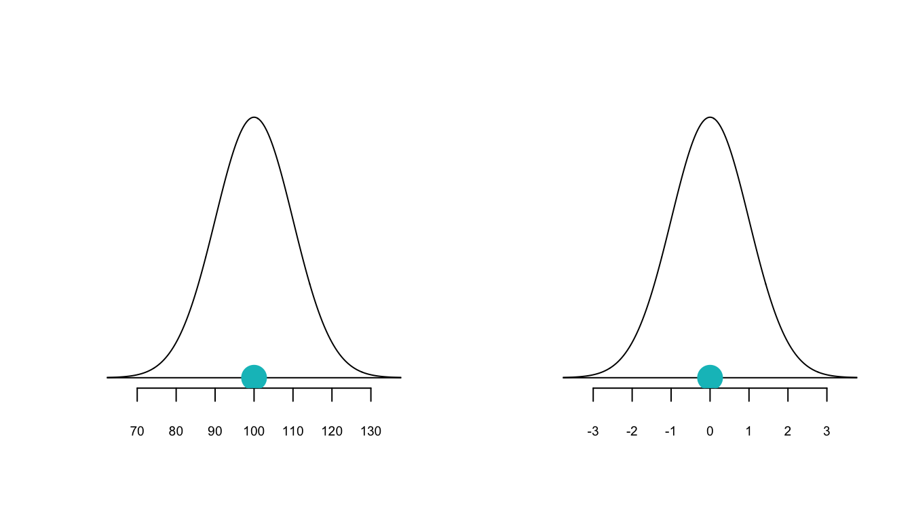
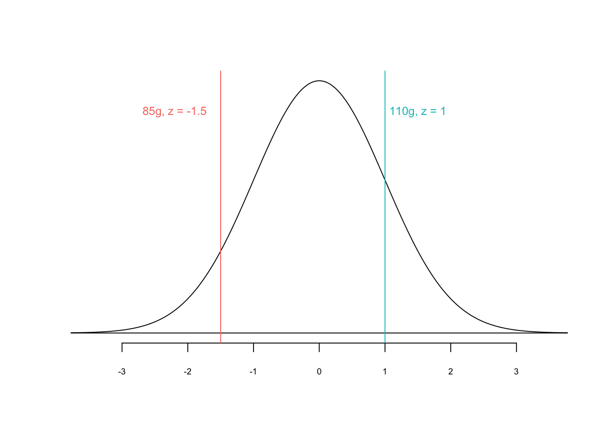
Der \(z\)-Wert für den 85g Apfel ist negativ da er leichter ist als ein durchschnittlicher Apfel. Um wie viel leichter? Um -1.5 Standardabweichungen = -1.5 \(\times\) 10 = -15g. Der \(z\)-Wert für den 110g-Apfel ist positiv, d.h. er ist schwerer als ein durchschnittlicher Apfel. Um wie viel schwerer? Um 1 Standardabweichung = 1 \(\times\) 10 = 10g.
Uns interessiert jetzt die Frage: Wie wahrscheinlich ist es, dass ein Apfel 85g schwer oder leichter ist? Also \(P(X \le 85) = P(Z \le \frac{85-100}{10}) = P(Z \le -1.5)\). Wie oben bereits erwähnt ist bei kontinuierlichen Variablen \(P(Z \le -1.5) = P(Z < -1.5)\).
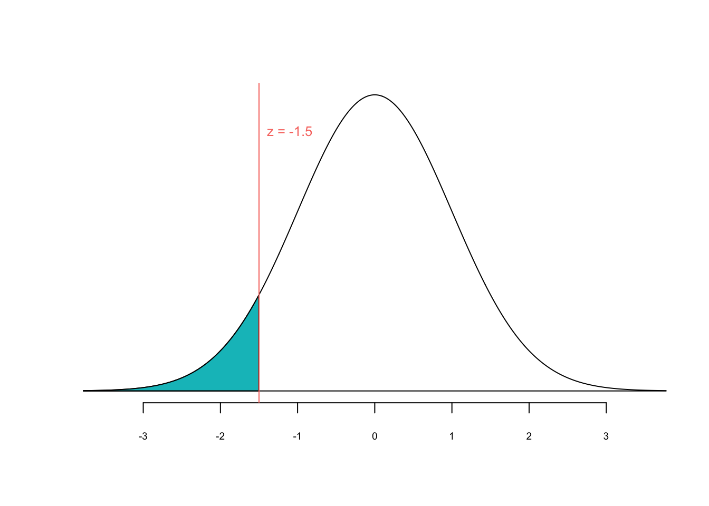
Die blaue Fläche unter der Kurve in Abbildung 2.14 entspricht der Wahrscheinlichkeit für \(Z \leq -1.5\). Mit Hilfe der kumulativen Wahrscheinlichkeitsfunktion \(\Phi(z)\) kann man diese leicht ablesen als \(\Phi(-1.5)\):
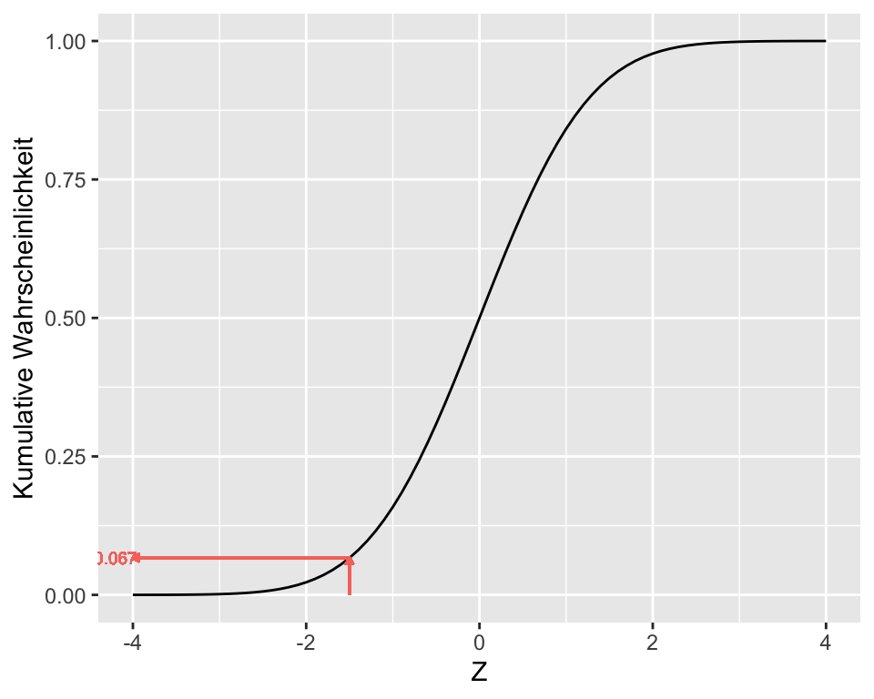
Vor dem Computerzeitalter hat man die kumulative Wahrscheinlichkeitsfunktion tabelliert, siehe z.B. hier. Mit dem Computer können wir bequemer auf diese kumulative Wahrscheinlichkeitsfunktion zugreifen. In diesem Fall erhalten wir mit der Funktion pnorm(-1.5) die kumulative Wahrscheinlichkeit von \(-\infty\) bis \(-1.5\) (was der blauen Fläche entspricht).
pnorm(-1.5)[1] 0.0668072R gibt eine Wahrscheinlichkeit von \(p\) = 0.067 für \(z \leq -1.5\) an. Das bedeutet, dass wir erwarten können, dass die Wahrscheinlichkeit einen Apfel von 85g oder einen leichteren Apfel zu erhalten bei 6.7% liegt. Umgekehrt heisst es auch, dass die Wahrscheinlichkeit, einen Apfel zu erhalten, der schwerer als 85g ist, ist gleich \(p = 1-0.067 = 0.933\) bzw. 93.3%.
Auch folgende Frage können wir stellen: Wie wahrscheinlich ist es, dass Ein Apfel 110g oder mehr wiegt? Also \(P(X \ge 110) = P(Z \ge \frac{110-100}{10}) = P(Z \ge 1)\). Auch hier gilt: \(P(Z \ge 1) = P(Z > 1)\).
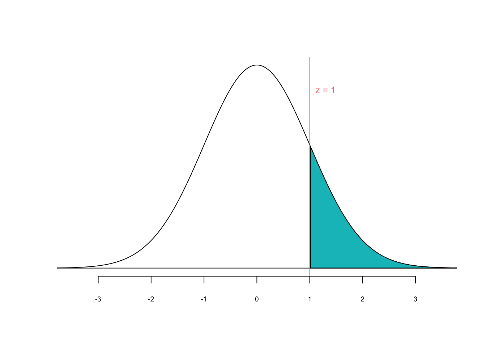
Die blaue Fläche in Abbildung 2.16 entspricht der Wahrscheinlichkeit für \(Z\geq1\). Wiederum hilft uns die z-Werte-Tabelle oder die Funktion pnorm() in R:
pnorm(1)[1] 0.8413447Aber dieses Ergebnis kann nicht richtig sein! Die Wahrscheinlichkeit muss kleiner als 50% sein, da ja nicht die ganze Fläche rechts vom Mittelwert blau eingefärbt ist. Der “Fehler” kommt daher, dass die Funktion pnorm() stets die Fläche unterhalb des angegebenen \(z\)-Werts, also die Fläche links vom \(z\)-Wert, berechnet. Daher müssen wir in diesem Fall eine kleine Anpassung vornehmen und wir ziehen den P-Wert einfach von 1 ab:
1 - pnorm(1)[1] 0.1586553Unsere Berechnungen haben ergeben, dass die Wahrscheinlichkeit, einen Apfel von 110g oder schwerer zu erhalten bei 15.8% liegt.
Zum Schluss noch folgende Übung: Wie gross ist die Wahrscheinlichkeit dafür, dass das Gewicht eines Apfels zwischen 85g und 110g liegt? Auch diese Berechnung ist kein Problem: Zuerst berechnen wir, wie gross die Wahrscheinlichkeit ist, dass ein Apfel maximal 110g schwer ist (siehe a) und ziehen von diesem Wert die Wahrscheinlichkeit ab, dass ein Apfel maximal 85g schwer ist (siehe b).
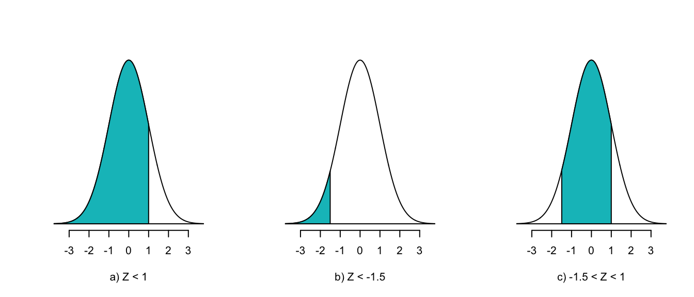
Die Berechnung in R folgt genau diesem Prinzip:
# Wahrscheinlichkeit für z < 1
a <- pnorm(1)
# Wahrscheinlichkeit für z < -1.5
b <- pnorm(-1.5)
# Wahrscheinlichkeit für -1.5 <= z < 1
a - b [1] 0.7745375Die Wahrscheinlichkeit, dass ein Apfel zwischen 85g und 110g wiegt beträgt 77.5% (\(p = 0.775\)).
Üblicherweise ist die Verteilung der Daten in der Population unbekannt. Daher müssen wir anhand von Stichprobendaten abschätzen, ob eine Normalverteilung zu Grunde liegt. Dazu existieren mehrere Verfahren:
Wir bevorzugen visuelle Verfahren.
Der QQ-Plot (Quantile-Quantile-Plot) ist ein wichtiges visuelles Hilfsmittel um zwei Wahrscheinlichkeitsverteilungen miteinander zu vergleichen. Wenn diese beiden Verteilungen identisch sind, liegen im QQ-Plot alle Punkte auf einer (diagonalen) Linie.
Im QQ-Plot für Normalverteilung werden auf der x-Achse die Quantile einer Normalverteilung (theoretisch erwartete Werte) eingetragen und auf der y-Achse die Quantile der beobachteten Daten (Stichprobendaten).
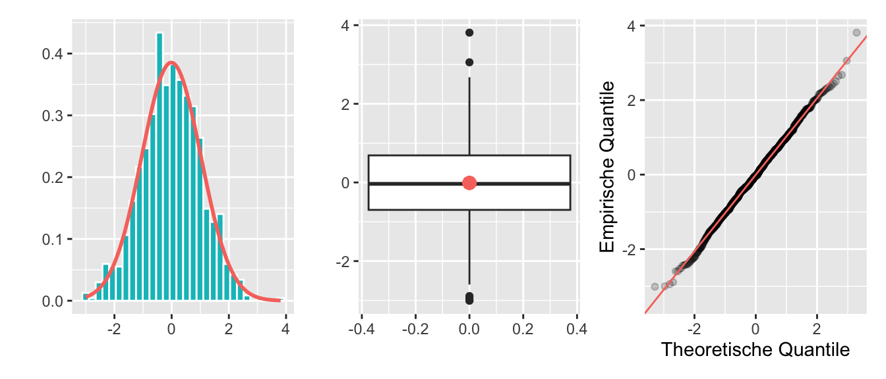
Weichen die Daten nicht/nur wenig von einer Normalverteilung ab, dann…
Somit besteht wenig Evidenz, dass die Daten nicht normalverteilt sind.
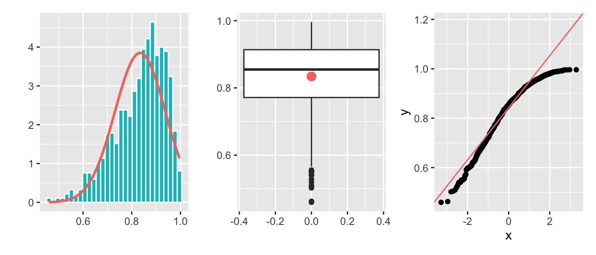
Beispiel für eine linksschiefe Verteilung (Abbildung 2.19):
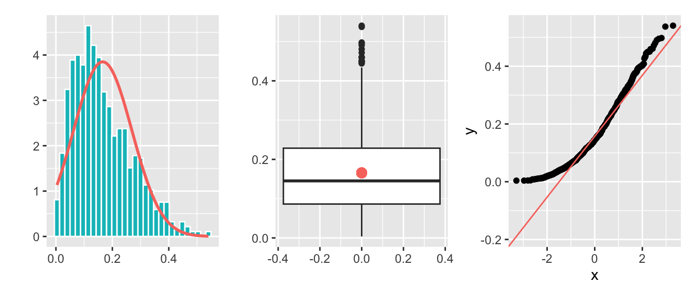
Beispiel für eine rechtsschiefe Verteilung (Abbildung 2.20):
Die Interpretation von QQ-Plots für kleine Stichproben ist schwierig und nicht immer ganz eindeutig möglich.
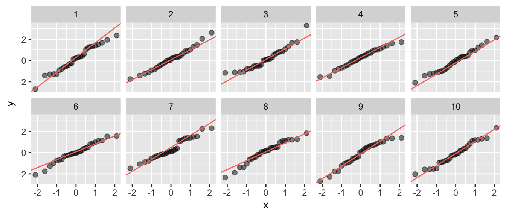
In der Abbildung 2.21 wurden zehn Stichproben im Umfang von \(n\) = 28 aus einer perfekt normalverteilten Population gezogen. Die Grafiken 3, 6 und 8 könnten auch zur Einschätzung führen, dass die Daten nicht normal verteilt sind. Mit anderen Worten: solche Abweichung sind unter einer Normalverteilung zu erwarten.
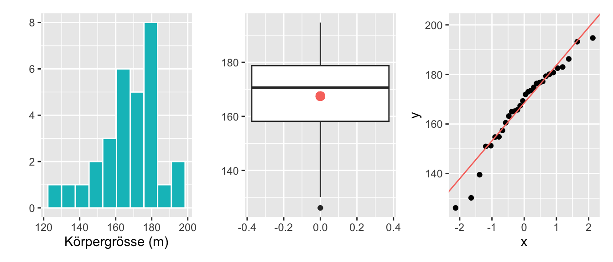
Diese Abbildung 2.22 zeigt reale Daten zur Körpergrösse aus einer Stichprobe \(n\) = 50 Personen. Obwohl wir theoretisch wissen, dass Körpergrösse eine normalverteilte Variable ist, würden wir aus den Stichprobendaten vermutlich einen anderen Schluss ziehen.
In gewissen Disziplinen sind statistische Tests zur Normalitätsprüfung populär. Diese Tests sind Hypothesentests (siehe Chapter 3) auf Normalverteilung. Die Nullhypothese dieser Tests ist, dass sich die Stichprobenverteilung und eine Normalverteilung nicht unterscheiden.
Wie oben schon erwähnt, raten wir von solchen Tests zur Prüfung auf Normalverteilung ab. Die Normalverteilung ist ein Konstrukt, das in seiner mathematisch reinen Form in der Natur nicht vorkommt. Keine Variable ist exakt normalverteilt. Es ist daher sinnlos zu fragen “Sind meine Daten normalverteilt?”, weil die Antwort immer “NEIN” ist. Als Modell leistet die Normalverteilung jedoch gute Dienste und die bessere Fragestellung lautet “Habe ich Hinweise, die dagegen sprechen, dass meine Daten annähernd normalverteilt sind?” bzw. “Liegt Evidenz dafür vor, dass ich nicht von normalverteilten Daten ausgehen kann?”.
Die \(t\)-Verteilung wird hier eingeführt, weil Statistikprogramme wie R bei Test- und Schätzverfahren häufig nicht die \(z\)-, sondern die \(t\)-Verteilung verwenden – unabhängig vom Stichprobenumfang. Der Grund dafür ist, dass die \(t\)-Verteilung die Unsicherheit bei der Schätzung der Standardabweichung berücksichtigt und dadurch präzisere Ergebnisse liefert. Die \(t\)-Verteilung ist eine Variante der Normalverteilung, die in der Statistik eine zentrale Rolle spielt. William S. Gosset, Pseudonym: Student zeigte, dass die standardisierte Schätzfunktion des Stichprobenmittelwerts bei normalverteilten Daten nicht mehr normalverteilt, sondern exakt \(t\)-verteilt ist, wenn die zur Standardisierung benötigte Varianz nicht bekannt, sondern aus der Stichprobe geschätzt wird – was in der Praxis fast immer der Fall ist.Die \(t\)-Verteilung erlaubt daher – insbesondere bei kleinen Stichproben – eine korrekte Berechnung der Verteilung der Differenz zwischen dem Stichprobenmittelwert und dem wahren Mittelwert der Grundgesamtheit.
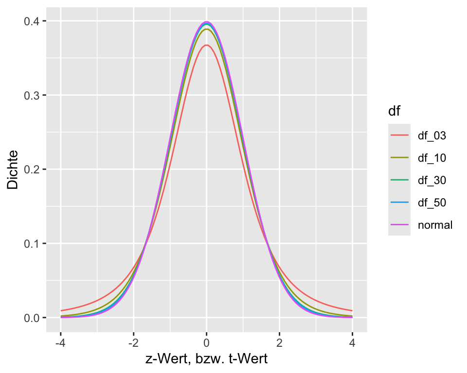
Was muss ich zur t-Verteilung wissen?
R.pnorm(), die Funktion pt(), wobei Sie zusätzlich die Anzahl Freiheitsgrade angeben.Beispiele zur Berechnung von Wahrscheinlichkeiten anhand der \(t\)-Verteilung:
\(P(T_{19} \le -1.5)\)
pt(-1.5, 19)[1] 0.07502427\(P(T_{9} \ge 2)\)
1-pt(2, 9)[1] 0.03827641\(P(-2 \le T_{14} \le 2)\)
a <- pt(2, 14)
b <- pt(-2, 14)
a-b[1] 0.934712Wenn Sie die gleichen Wahrscheinlichkeiten unter der Normalverteilung berechnen werden Sie feststellen, dass diese leicht verschieden sind.
R Codes für die Binomial- und Normalverteilung# Wahrscheinlichkeiten anhand einer Normalverteilung berechnen
mu <- 170 # angenommener Mittelwert der Körpergrösse
sigma <- 12 # angenommene Standardabweichung der Körpergrösse
# Was ist der z-Wert, wenn eine Person 165 gross ist?
x <- 165
z <- (x-mu)/sigma # z-Transformation
z
# Die Wahrscheinlichkeit, dass jemand gleich gross oder kleiner ist als x
pnorm(z)
# Die Wahrscheinlichkeit, dass jemand gleich gross oder grösser ist als x
1-pnorm(z) # pnorm berechnet die Fläche links von x
# Wie gross muss jemand sein, um bei den grössten 10% zu sein?
# Hier muss anhand der Wahrscheinlichkeit der z-Wert gefunden werden
p <- 0.1
z <- qnorm(1-p) # wir suchen den z-Wert, welcher zu 10%, bzw. 90%
x <- z * sigma + mu # Umformung der z-Transformation, um den gesuchten Wert zu finden.
x
# Wie gross ist die Wahrscheinlichkeit, dass jemand zwischen 160 und 175 gross ist?
x1 <- 160
z1 <- (x1-mu)/sigma
p1 <- pnorm(z1) # Fläche unterhlab von 160cm
p1
x2 <- 175
z2 <- (x2-mu)/sigma
p2 <- 1-pnorm(z2) # Fläche oberhalb von 175cm
p2
1 - (p1+p2) # Wir addieren die beiden Randflächen und ziehen sie von der totalen Fläche (1) ab
# Die norm()-Funktionen
pnorm(1.96) # Das p steht für probability. Es wird die Fläche, also die Wahrscheinlichkeit für einen z-Wert kleiner oder gleich gross 1.96 berechnet.
qnorm(0.975) # Das q steht für quantile. Es wird der z-Wert für das entsprechende Quantil berechnet.
rnorm(100, 10, 2) # Dar r steht für random. Aus einer Normalverteilung mit mu = 10 und sigma = 2 werden zufällig 100 Werte gezogen.
## QQ-Plot um zu überprüfen, ob die Daten aus einer normalverteilten Population stammen
x <- rnorm(100, 10, 2)
qqnorm(x); qqline(x)
# t-Verteilung
t <- z # der t-Wert wird gleich berechnet wie der z-Wert
df <- 19 # Die 20 ist ein willkürliches Beispiel. In einfachen Situationen ist df = n-1
pt(t, df) # P(T <= t) mit df = 19
1-pt(t, df) # P(T >= t) mit df = 19
qt(0.975, df) # Das q steht für quantile. Es wird der t-Wert für das entsprechende Quantil berechnet.
# Binomialverteilung
## Die Funktionen pbinom() und dbinom() brauchen die Argumente x, n und p:
pbinom(5, 10, 0.5) # Wahrscheinlichkeit für MAXIMAL 5 Erfolge bei 10 Versuchen und einer Erfolgswahrscheinlichkeit von 50%
dbinom(5, 10, 0.5) # Wahrscheinlichkeit für GENAU 5 Erfolge bei 10 Versuchen und einer Erfolgswahrscheinlichkeit von 50%